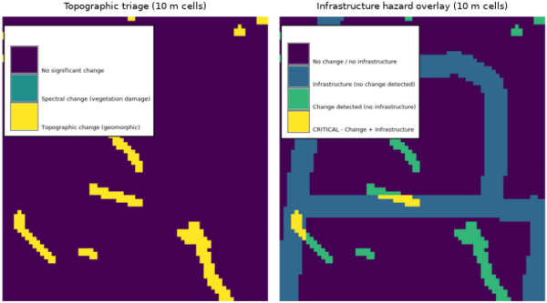

r.dem.screen performs a rapid regional triage that fuses topographic change (from a DEM of Difference) with optional spectral change (NDVI or VARI), and can overlay the result with infrastructure to flag hazard hotspots. It is intended as a coarse-resolution first pass that directs detailed analysis toward the highest-priority areas.
The output raster classifies each cell into a priority class. With a spectral_change raster supplied:
| Class | Meaning |
|---|---|
| 0 | No significant change |
| 1 | Spectral change only (vegetation damage) |
| 2 | Topographic change only (geomorphic) |
| 3 | Topographic and spectral change (highest priority) |
A cell is flagged for topographic change when
|dod| >= topo_threshold, and for spectral change when
spectral_change <= spectral_threshold (negative values indicate
vegetation loss). Without a spectral input only topographic change is classified
(classes 0 and 2).
When both an infrastructure vector and a hazard_output name are given, the infrastructure is buffered by infra_buffer_m and intersected with the triage result:
| Class | Meaning |
|---|---|
| 0 | No change and no infrastructure |
| 1 | Infrastructure, no change detected |
| 2 | Change detected, no infrastructure |
| 3 | CRITICAL: change intersects infrastructure |
The tool reports per-class cell counts and areas. Both outputs carry category labels. Run the tool at the regional screening resolution (for example 10 m); the dod input is expected to be a significant-change raster, such as the significant DoD from r.dem.change.
The commands below use the example scene built in the r.dem toolset manual, which is derived from the North Carolina sample dataset. Build it there first.
Screening runs on a coarser grid than the change analysis: the point is to find where to look, not to measure what happened. At 10 m this tile is only 70 by 75 cells, which is why the triage map looks blocky next to the 1 m products. In practice the screening pass covers a whole flight corridor, where that cell size is far below map scale.
g.region raster=elev_lid792_1m res=10 -a r.resamp.stats input=dod_significant output=dod_10m_masked method=average # Blocks holding no significant cell come back NULL, which for screening # means no change rather than no data. r.mapcalc "dod_10m = if(isnull(dod_10m_masked), 0, dod_10m_masked)" r.dem.screen dod=dod_10m output=triage topo_threshold=1.0
Add the road network to flag change that reaches infrastructure:
r.dem.screen dod=dod_10m output=triage \
infrastructure=pgcp_roads hazard_output=hazard \
infra_buffer_m=30 topo_threshold=1.0
spectral_change fuses vegetation loss with the topographic signal, so that scour under stripped canopy ranks above either signal alone. It expects a bitemporal difference (e.g., NDVI or VARI), negative where vegetation was lost.
However, the North Carolina sample dataset carries only one date of imagery, so a real bitemporal difference cannot be built from it. The raster below is a stand-in: a genuine pre-event NDVI from the Landsat bands, reduced along the flood corridor and perturbed with noise. It illustrates the option, it does not demonstrate that the fusion works, because the vegetation loss is imposed rather than observed. With real imagery, difference the two dates instead.
r.mapcalc "ndvi_pre = float(lsat7_2002_40 - lsat7_2002_30) \
/ float(lsat7_2002_40 + lsat7_2002_30)"
r.surf.gauss output=ndvi_noise mean=0 sigma=0.05 seed=7
r.mapcalc "ndvi_post = ndvi_pre \
- if(abs(change_truth) > 0.3, 0.30, 0) + ndvi_noise"
r.mapcalc "ndvi_change = ndvi_post - ndvi_pre"
r.dem.screen dod=dod_10m spectral_change=ndvi_change \
output=triage_fused topo_threshold=1.0 spectral_threshold=-0.15
Reset the region afterwards, since the screening step coarsened it:
g.region raster=elev_lid792_1m

Corey T. White, Center for Geospatial Analytics, NC State University
{kind=link}